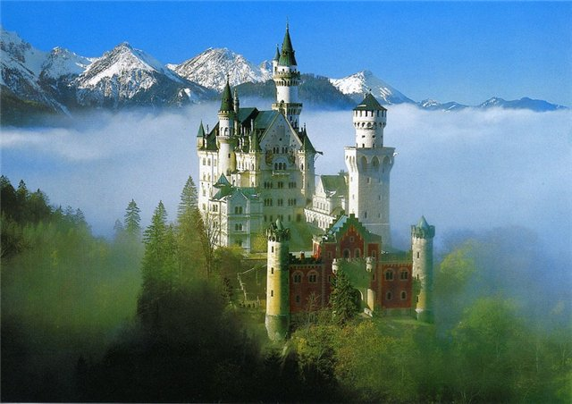

"Так идет весёлый Дидель
с палкой, птицей и котомкой,
через Гарц, поросший лесом,
вдоль по рейнским берегам.
По Тюрингии дубовой, по Саксонии сосновой,
по Вестфалии бузинной, по Баварии хмельной..."
Приглашаем в наш новый поход «Романтическая дорога» в Баварии. Кстати, не смотря на нашу довольно буйную фантазию, это название придумали не мы. Сами немцы! Действительно, они соединили велосипедным маршрутом романтические города Баварии (и не только) и получили замечательный маршрут. Любители Германии оценят.
Не смотря на то, что маршрут начинается и заканчивается в Мюнхене, он проходит по небольшим дорожкам, через небольшие городки. Ежедневные пробеги не длинные, но на маршруте холмисто. Кульминацией похода является визит в замок Нойшванштайн, который, пожалуй, является не только символом немецкого романтизма, но и, видимо, самым известным замком Германии. На фото он справа. Добро пожаловать в Баварию - южную Германию!
День 1. В этот день мы прилетаем в аэропорт Мюнхена и размещаемся в гостинице в его пригороде. Собираем велосипеды, знакомимся, а если остается время, успеваем съездить и в сам Мюнхен. Впрочем, финал маршрута у нас непосредственно в Мюнхене, и если в наш первый день времени будет не много, это не большая беда.
День 2. 50 км. Начинаем свое знакомство с Баварией. Наш маршрут по второстепенным дорожкам ведет нас во Фрйедберг. В этом городе всего 29 000 жителей. Но все атрибуты старинного немецкого городка на лицо: замок на горе, ратуша, чудесные улочки, сохранившиеся чуть не со средневековья. И, главное - этот маршрут не задуман как сложный. Спешить не надо, можно спокойно погулять. Вечером нас ждет Аугсбург. Это второй по возрасту город Германии после Трира. Когда-то это был важный город не Германии, а всей Европы! Торговый и финансовый центр. Увы, Аугсбургу не повезло во время войны. Здесь были крупные немецкие заводы, в том числе танковый и авиационный. Многое пострадало. Кое-что восстановлено. И того, что осталось, вполне хватит, чтобы гулять и гулять по этому старинному городу.
День 3. 53 кмВ этот день мы покидаем Аугсбург и поворачиваем на юг. Едем вдоль реки Лех, по совершенно замечательным местам. Тут не много рельефа, зато много лесов. Через них идет дорога... как бы ее назвать? Назовем Романтическая дорога... Становится понятно, почему немцы выбрали такое название для этого маршрута. Завершается день в городке Ландсберг. Это совсем крохотное поселение, что нам совсем даже на руку. Можно только удивляться, как в Европе умеют сохранять природу. Есть ощущение, что мы стоим посреди зеленого леса.
День 4. 55 км. Сегодня у нас будет и рельеф. Сначала, правда, мы продолжим движение вдоль реки Лех, а потом уедем в направлении Кауфбеурена. Не скрою - это отступление от традиционного маршрута по Романтической дороге. Но этот город надо видеть! Это настоящая сказка! К тому же и дорога к нему очень живописна. Идет по полям, лесам. Красиво!
День 5. 50 км. В этот день мы приедем в Фюссен, а также побываем на берегу озера Форггзее. Да. А нам казалось вчера, что Кауфберен — красив. В таком случае Фюссен - великолепен. Фюссену добавляет красоты вид на не столь уж далекие горные вершины.
День 6. 65 км. В этот день мы посетим Нойшвнштайн. Это будет одновременно и самая красивая точка нашего маршрута, и самая высокая. Я не буду писать про этот замок. Он прекрасен и достоин осмотра.
День 7. 50 км. Это наш последний ходовой день. По довольно тихим дорожкам мы приезжаем в Мюнхен. Вечером — он наш!
День 8. Отъезд из Мюнхена.
NB. Данное описание – это план велопутешествия. Организаторы сохраняют за собой право на его некоторое изменение.
В стоимость велотура входят:
В стоимость велотура не входит:
Предусмотрены скидки: 15 Евро "скидка для рецидивистов" – людей уже бывавших с нами в велопоходах по Финляндии, Чехии, Аландским островам. Также 15 евро скидки получат члены клуба "ВелоПитер". Скидки не суммируются. Кто надумал - можно регистрироваться на странице календарь!